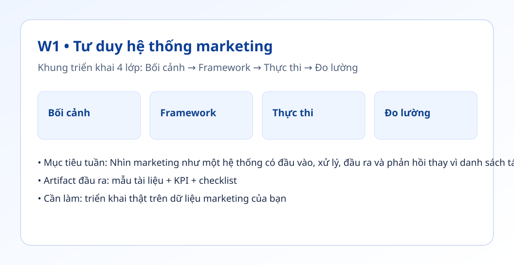

Hình trực quan mô-đun

Bối cảnh thực tế
- Nhiều đội marketing tối ưu từng đầu việc nhỏ nhưng bỏ qua chỗ nghẽn chính trong toàn bộ luồng.
- Khi không có bản đồ hệ thống, bạn khó biết nên tự động hóa ở bước nào để tạo tác động lớn nhất.
- Tuần này tập trung vào việc đo thời gian thực tế và nhận diện điểm nghẽn bằng dữ liệu thay vì cảm giác.
Khung tư duy cốt lõi
- Khung SIPOF: Nguồn vào → Đầu vào → Xử lý → Đầu ra → Phản hồi.
- Bộ đánh dấu điểm nghẽn T/E/R: tốn thời gian, dễ sai, lặp lại.
- Quy tắc 80/20: chỉ chọn 1-2 điểm nghẽn lớn nhất để xử lý trước.
Quy trình triển khai chi tiết
- Bước 1: Liệt kê một quy trình có tần suất cao, ví dụ: tạo nội dung tuần cho Facebook, LinkedIn, email.
- Bước 2: Vẽ luồng từ brief đến xuất bản, ghi ai chịu trách nhiệm cho mỗi bước và thời gian trung bình.
- Bước 3: Đánh dấu T/E/R cho từng bước, ưu tiên bước vừa tốn thời gian vừa lặp lại nhiều.
- Bước 4: Thiết kế phương án cải tiến vòng 1: chuẩn hóa brief, mẫu prompt, checklist QA.
- Bước 5: Đặt KPI nền trước khi thay đổi: phút/bản nháp, tỷ lệ xuất bản đúng lịch, số vòng sửa.
- Bước 6: Chạy thử 1 tuần, so sánh trước/sau và ghi nhận bài học vào nhật ký cải tiến.
Tình huống nhỏ với số liệu
| Bước | Trước cải tiến | Sau cải tiến |
|---|---|---|
| Ý tưởng | 90 phút / 6 bài | 45 phút / 6 bài |
| Bản nháp | 150 phút | 92 phút |
| Rà soát | 60 phút | 35 phút |
Kết luận: Điểm nghẽn lớn nhất là Ý tưởng + Bản nháp. Khi có prompt khung và checklist, tổng thời gian giảm ~41% sau 1 vòng thử nghiệm.
Sản phẩm bàn giao tuần này
- Bản đồ hệ thống 1 trang (PNG hoặc PDF).
- Bảng đo thời gian theo bước trong Google Sheets.
- Danh sách 5 điểm nghẽn có tag T/E/R và mức ưu tiên.
Bài tập thực hành (45-60 phút)
- Trong 45 phút, tự vẽ lại luồng marketing tuần hiện tại của bạn.
- Chọn 2 điểm nghẽn lớn nhất và viết 1 kế hoạch thử nghiệm cải tiến cho tuần tới.
- Đặt ngưỡng thành công: giảm ít nhất 20% thời gian ở 1 bước chính.
Thang đo hoàn thành
| Mức | Mô tả |
|---|---|
| Mức 0 | Chỉ mô tả việc, không có luồng |
| Mức 1 | Có luồng nhưng thiếu số đo thời gian |
| Mức 2 | Có số đo, có điểm nghẽn, có ưu tiên |
| Mức 3 | Có kế hoạch cải tiến + KPI đo trước/sau |
Lỗi thường gặp
- Tối ưu quá sớm ở bước ít ảnh hưởng.
- Đánh giá bằng cảm giác thay vì dữ liệu thời gian.
- Thiếu bước phản hồi nên lỗi cũ lặp lại.
Video thực hành (tùy chọn)
Phần học chính đã đầy đủ bằng văn bản và ví dụ. Nếu bạn muốn xem thao tác thực tế, dùng các video gợi ý sau:
Đánh dấu tiến độ
Tuần này chưa hoàn thành
Đã hoàn thành tuần 1